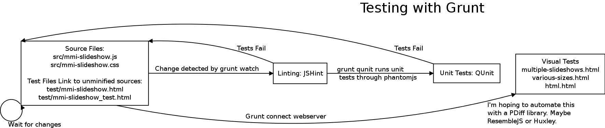

-
MMI Slideshow - Testing, Building, and Code


Example Configuration HTML
-
MMI Slideshow - Examples
-
-
OCR Panel Example
This is a re-creation using Google Maps API V3. The original was built with Google Maps API V2 and integrated custom traffic, restaurant inspection, and real estate data in addition to the crime data. Each panel also had an associated datatable that could be shown or hidden.
Use the "More..." button to see crime markers.
Loading... 
-
Grid-based clustering
Grid-based clustering works by dividing the map into squares of a certain size (the size changes at each zoom) and then grouping the markers into each grid square.
This technique can be rather quick because it only requires iterating through the markers once to see if its position is between a set of coordinates; no complicated distance calculation is needed. It does have some limitations, as you can see marker's 7 and 8 are close together but because they are in separate grids they are not clustered together.
Image and text from https://developers.google.com/maps/articles/toomanymarkers

- Good: Pretty fast. O(n)
- Bad: Not very accurate. Really just de-cluttering.
- Bad: I couldn't figure out a simple way to set up the grid.
- Grid-box based: Divide the viewport into a grid and then for each grid box check each unclustered marker to see if it's inside. Cluster boxes and their markers as they enter the viewport. Redo all the clusters if markers are added or removed.
- Marker based: For each marker, figure out its grid box. Or ... (see next slide)
-
100 Cups of Coffee in 2 Days
I tried to go to 100 different coffee places around Orange County in 2 days and drink 1 cup of coffee at each of them and put it all one of my maps in real time. I failed to drink all the coffee, but I learned how to push my web app even further by using it to do live reporting.
Loading...